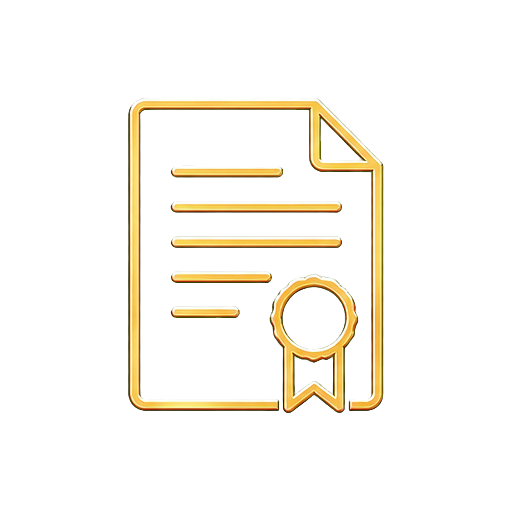

Работаю в Адвокатской коллегии
«Адвокаты Дальнего Востока»
г. Хабаровск
Адвокат Селиванов Андрей Александрович
Защита
по уголовным делам
в Хабаровске
Подключаюсь на стадии проверки, задержания, обыска, допроса, предварительного следствия и суда.
Опыт службы в МВД помогает понимать порядок действий правоохранительных органов и заранее оценивать процессуальные риски.
- 2017–2026служба в системе МВД

27/1389регистрационный номер в реестре адвокатов- Адвокатская палатаХабаровского края
• При задержании, обыске или вызове на допрос желательно связаться с адвокатом до дачи объяснений и показаний.
Когда помощь адвоката особенно важна
Чем раньше сформирована позиция защиты, тем больше возможностей повлиять на дальнейшее развитие дела.
- 01
Задержание или доставление в отдел
Определение процессуального статуса, участие в первом допросе и защита от давления.
- 02
Обыск
Контроль процедуры, фиксация нарушений, проверка законности изъятия имущества.
- 03
Вызов на допрос
Подготовка к вопросам, определение безопасной позиции и участие адвоката.
- 04
Доследственная проверка
Анализ ситуации до возбуждения дела и подготовка правовой позиции.
- 05
Избрание меры пресечения
Подготовка возражений против заключения под стражу и обоснование более мягкой меры.
- 06
Обжалование приговора
Анализ судебного решения, подготовка жалобы и представление интересов.
Фото адвокатадобавляется отдельно
Опыт работы внутри правоохранительной системы
До получения статуса адвоката я проходил службу в системе МВД России. В практической работе изучал порядок проведения проверок и следственных действий, особенности фиксации доказательств и принятия процессуальных решений.
Этот опыт помогает оценивать уголовное дело не только со стороны защиты, но и понимать предполагаемую логику действий органов следствия.
Задача защиты — не создавать необоснованных ожиданий, а заранее видеть риски и использовать предусмотренные законом возможности.
- 2017–2026служба в МВД России
- Рег. № 27/1389в реестре адвокатов
- Адвокатская палатаХабаровского края
- Личное ведение делабез передачи сторонним исполнителям
Основные направления уголовной защиты
Защита на стадии проверки, предварительного расследования, судебного разбирательства и обжалования.
Защита по делам о хранении, приобретении, перевозке и сбыте. Проверяю законность оперативных мероприятий, обыска и изъятия, порядок исследований и экспертиз, допустимость доказательств.
Обсудить ситуацию →Анализирую хозяйственные отношения, договоры, движение денежных средств и переписку. Отделяю гражданско-правовой спор от уголовного обвинения и формирую доказательную позицию.
Обсудить ситуацию →Защита по делам о причинении вреда здоровью, угрозах и иных преступлениях против личности. Работаю с показаниями, медицинскими документами, экспертизами и обстоятельствами необходимой обороны.
Обсудить ситуацию →Проверяю квалификацию деяния, размер ущерба, доказательства причастности и роль каждого участника. Сопровождаю следственные действия и работаю над смягчающими обстоятельствами.
Обсудить ситуацию →Защита при обвинениях во взяточничестве, превышении полномочий и служебных злоупотреблениях. Изучаю должностные регламенты, финансовые материалы и результаты оперативных мероприятий.
Обсудить ситуацию →Участвую в делах о ДТП с причинением тяжкого вреда или гибелью людей. Проверяю схему происшествия, технические заключения, показания участников и результаты автотехнической экспертизы.
Обсудить ситуацию →Защита военнослужащих по делам о самовольном оставлении части, неисполнении приказа и иных нарушениях порядка прохождения службы. Учитываю состояние здоровья и фактические условия службы.
Обсудить ситуацию →Если ситуация не относится к перечисленным категориям, проведу первичную правовую оценку, определю срочные действия и сообщу, могу ли принять поручение по делу.
Обсудить ситуацию →
05
Первые объяснения и показания могут определить дальнейший ход дела.
Обратитесь за защитой желательно до первого допроса или сразу после задержания.
Как строится защита
- 01
Первичная оценка
Изучение обстоятельств, текущего статуса дела и ближайших процессуальных рисков.
- 02
Изучение материалов
Анализ документов, протоколов, доказательств и ранее данных объяснений.
- 03
Формирование позиции
Определение правовой позиции и согласование дальнейших действий с доверителем.
- 04
Участие в деле
Участие в следственных действиях, судебных заседаниях и подготовка заявлений.
- 05
Обжалование решений
При наличии оснований — обжалование процессуальных решений и судебных актов.
Примеры из практики
Информация представлена без персональных данных. Результат каждого дела зависит от его обстоятельств.
Дело по ч. 4 ст. 159 УК РФ
- Было
- Обвинение в мошенничестве в особо крупном размере
- Что сделано
- Изучены материалы, заявлены ходатайства
- Стало
- Скорректирована правовая оценка
Дело по ч. 3 ст. 30,
ч. 4 ст. 228.1 УК РФ
- Было
- Тяжкое обвинение в покушении на сбыт
- Что сделано
- Проверены доказательства и порядок изъятия
- Стало
- Исключена часть доказательств
Дело по ч. 2 ст. 111 УК РФ
- Было
- Обвинение в причинении тяжкого вреда
- Что сделано
- Оспорены выводы экспертизы
- Стало
- Смягчена итоговая квалификация
Отзывы клиентов
“Андрей Александрович подключился к делу на ранней стадии, подробно объяснил риски и порядок действий. Благодаря его работе удалось выстроить понятную позицию защиты.
“Очень внимательный подход к деталям дела. Все решения обсуждались заранее, без необоснованных обещаний и сложных юридических формулировок.
“Профессионально и спокойно сопровождал дело, всегда оставался на связи. Рекомендую как ответственного адвоката.
Часто задаваемые вопросы
Можно ли обратиться до возбуждения уголовного дела?
Да. Участие адвоката на ранней стадии помогает оценить риски и подготовиться к процессуальным действиям.
Выезжаете ли вы в отдел полиции или следственный орган?
Да, возможность и время выезда согласовываются по телефону с учётом срочности ситуации.
Что делать, если вызывают на допрос?
Уточните свой процессуальный статус и до дачи показаний обсудите ситуацию с адвокатом.
Сколько стоит помощь адвоката?
Стоимость зависит от стадии, объёма материалов и предполагаемого объёма работы. Она определяется после первичной оценки.
Может ли родственник обратиться вместо задержанного?
Да. Родственник может сообщить обстоятельства и договориться о выезде адвоката.
Сохраняется ли конфиденциальность обращения?
Да. Сведения, полученные адвокатом в связи с обращением, защищены адвокатской тайной.
Связаться с адвокатом
Нужна защита
Нужна защита
по уголовному делу?
Кратко опишите ситуацию. Я свяжусь с вами, чтобы обсудить обстоятельства и возможные действия.
Адвокатская тайнаСодержание обращения и полученные сведения строго конфиденциальны.